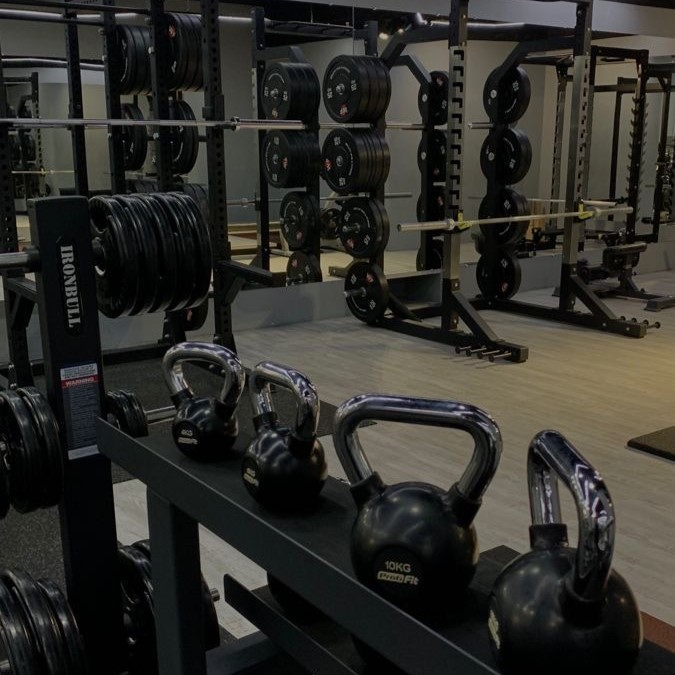
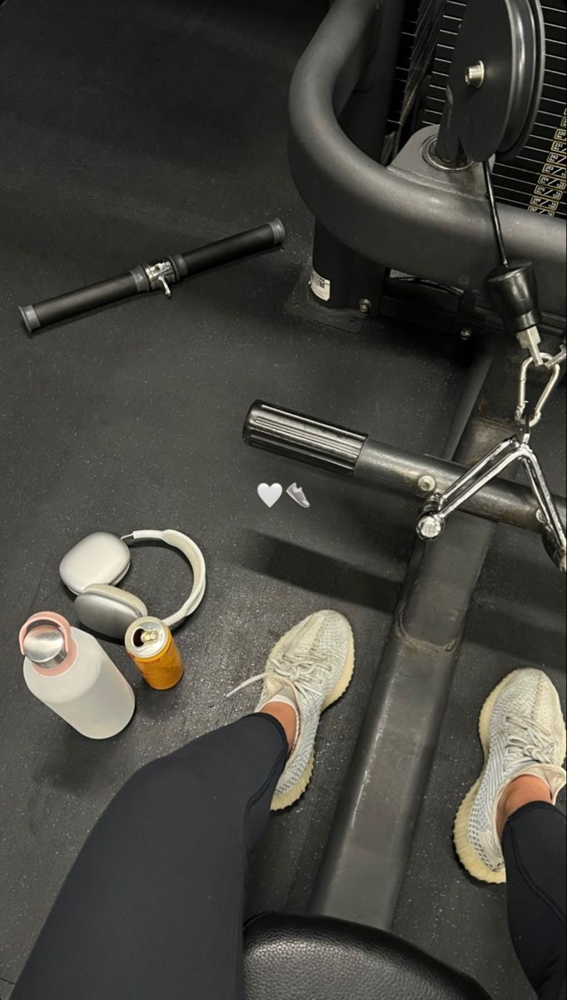

PASJA DO SPORTU TO JAK PŁOMIENNY OGIEŃ, KTÓRY PŁONIE W SERCU SPORTOWCA, NAPĘDZANY NIEZŁOMNĄ
DETERMINACJĄ, MIŁOŚCIĄ DO RYWALIZACJI I DĄŻENIEM DO OSIĄGNIĘCIA DOSKONAŁOŚCI FIZYCZNEJ I MENTALNEJ.
TO NIE TYLKO AKTYWNOŚĆ FIZYCZNA, ALE RÓWNIEŻ SPOSÓB ŻYCIA, KTÓRY DEFINIUJE CHARAKTER, WARTOŚCI I
CELE JEDNOSTKI. DLA PASJONATA SPORTU, KAŻDA TRENINGOWA SESJA LUB RYWALIZACJA TO OKAZJA DO WYZWANIA
WŁASNYCH GRANIC I
OSIĄGNIĘCIA NOWYCH WYSOKOŚCI. TO NIE TYLKO WALKA Z PRZECIWNIKAMI NA BOISKU CZY ARENIE, ALE RÓWNIEŻ
WEWNĘTRZNA PODRÓŻ KU SAMODOSKONALENIU I SUKCESOWI. TA PASJA NIE ZNA GRANIC CZASOWYCH. NIEZALEŻNIE OD
PORY DNIA CZY WARUNKÓW ATMOSFERYCZNYCH, SPORTOWIEC
ODDAJE SIĘ TRENINGOM Z PASJĄ I ZAANGAŻOWANIEM, GOTOWY POKONAĆ WSZELKIE PRZESZKODY, KTÓRE STOJĄ NA
DRODZE DO OSIĄGNIĘCIA SWOICH CELÓW.
SPORT STAJE SIĘ TAKŻE ŹRÓDŁEM INSPIRACJI I MOTYWACJI DLA PASJONATA. OBSERWUJĄC OSIĄGNIĘCIA INNYCH
SPORTOWCÓW LUB DOŚWIADCZAJĄC WŁASNYCH SUKCESÓW I PORAŻEK, ODNAJDUJE ON SIŁĘ DO DALSZEGO ROZWOJU I
PODNOSZENIA POPRZECZKI SWOICH UMIEJĘTNOŚCI. JEDNAKŻE, PASJA DO SPORTU TO NIE TYLKO RYWALIZACJA I WYSIŁEK FIZYCZNY. TO RÓWNIEŻ EMOCJE, RADOŚĆ ZE
WSPÓLNYCH TRENINGÓW ZESPOŁOWYCH, WZAJEMNE WSPARCIE W TRUDNYCH CHWILACH ORAZ PRZYWIĄZANIE DO WSPÓLNEJ
PASJI, KTÓRE ŁĄCZY SPORTOWCÓW W SILNE WIĘZI. NAJWAŻNIEJSZE JEST JEDNAK TO, ŻE PASJA DO SPORTU NIE KOŃCZY SIĘ NA BOISKU CZY ARENIE. PRZENOSI SIĘ
ONA NA CODZIENNE ŻYCIE, WPŁYWAJĄC POZYTYWNIE NA ZDROWIE, SAMOPOCZUCIE I RELACJE MIĘDZYLUDZKIE.
SPORTOWIEC Z PASJĄ STAJE SIĘ NIE TYLKO LEPSZYM ZAWODNIKIEM, ALE RÓWNIEŻ LEPSZYM CZŁOWIEKIEM.
